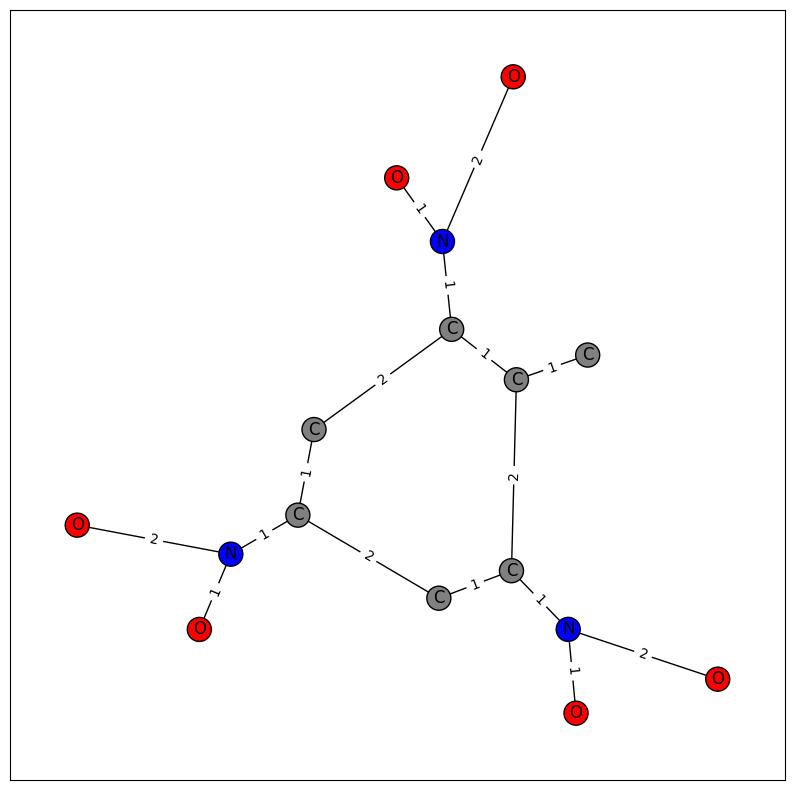

projects

The Spam vs. Ham classifier is a logistic regression model,
capable of discerning between spam emails and legitimate emails. It is accompanied by a simple web application,
capable of taking user input to predict the legitimacy of an email. Built in Flask.

Natural Disaster Classifier is a set of computer vision models, trained to classify and
differentiate between natural disaster images and their apparent damage level. Developed as the final project
for UC Berkeley's Data 200S: Principles and Techniques of Data Science.

JujuType is a speed typing game inspired by Monkeytype and my favorite anime, Jujutsu Kaisen.
Built in HTML, CSS, and JavaScript.

Simple Substructure Search is a Python module that processes molecular
structural data files (.sdf), returns their graphical representations via NetworkX, and can
detect the presence of substructures via molecular fingerprinting.